2 Mapping Your Field Data
In Catalonia (or London), your working group recorded sites using the field survey, and recorded your route in Strava. This week, we will bring the two together on one map in ArcGIS Online. Everyone makes their own map. Next week, you will turn this map into a story map, so please make sure you save it at the end of the session.
Make sure you have a copy of your working group’s route as a .gpx file, exported from the Strava website by whoever recorded it (see After the trip), and that you know your fieldwork group and working group number. You can look these up in your working group’s link on the Field Survey Links page.
2.1 Layers and attributes
In Session 1, we saw that spatial data come as points, lines and polygons. A GIS keeps each dataset as a separate layer, and stacks these layers on top of each other to make a map. On our map, we will have three of them:
- Your sites form a point layer, with one point per survey entry.
- Your route forms a line layer: the track that Strava recorded.
- The basemap at the bottom is the background (streets, satellite imagery, terrain) that gives your data context.
Each feature in a layer also carries attributes: the information stored about it, such as the site ID, note and photo you entered in the survey. In ArcGIS Online, you can see a feature’s attributes in its pop-up when you click on it. You can also use attributes to filter a layer, so that only some features are shown, or to style it, for instance by colouring points by category.
A map on a flat screen is always a projection of the curved Earth, which distorts distances and areas to some extent. ArcGIS Online takes care of this for us, so we will not need to worry about it in this module.
ArcGIS Online changes its layout regularly. This chapter therefore describes what to click by its label (e.g. Add). If a label has moved or been renamed, look for the closest equivalent, and ask in class if you cannot find it.
2.2 Open Map Viewer
Let us start by signing in to ArcGIS Online and opening an empty map:
Go to https://uclondon.maps.arcgis.com, click UCL SSO, and sign in as you would for Moodle. Please use a laptop or computer for this, not your phone.
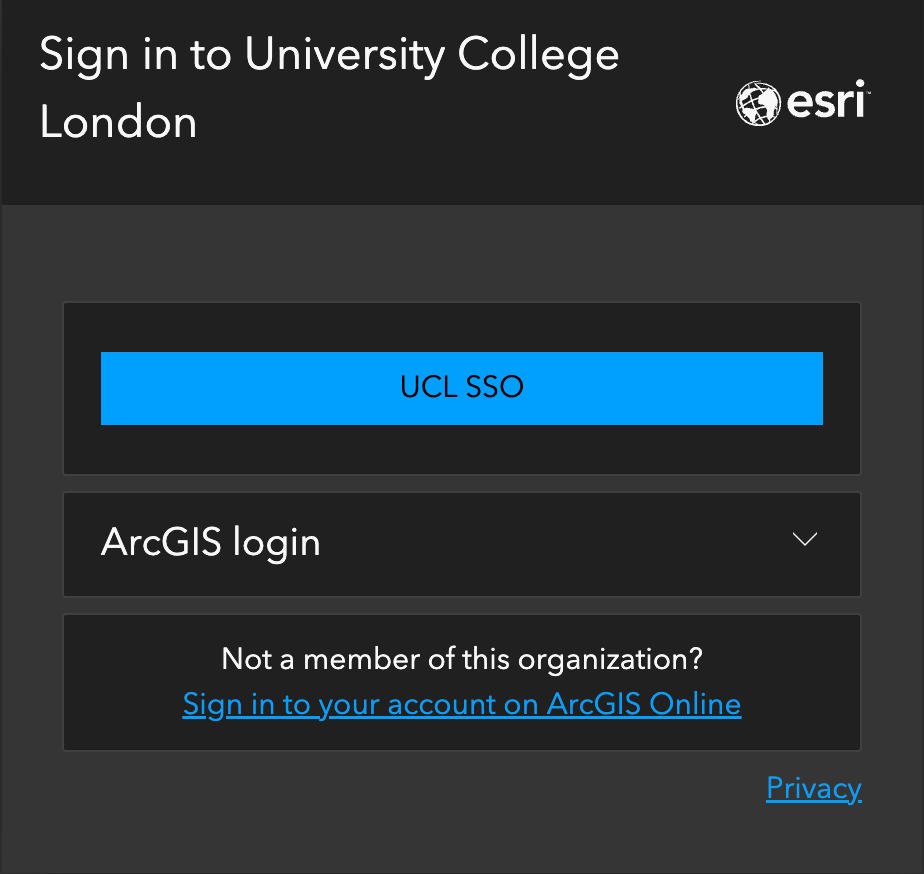
Figure 1: Signing in to ArcGIS Online with UCL SSO. Open Map from the top menu. This opens Map Viewer with an empty map.
Take a moment to look around. The left-hand toolbar holds what is in your map (Add, Layers, Basemap, Save and open), whilst the right-hand toolbar holds the settings for the selected layer (Properties, Styles, Filter, Pop-ups). The right-hand toolbar only shows icons: hover over an icon to see its name, or click the « button at the bottom of the toolbar to expand it so that the names are shown.
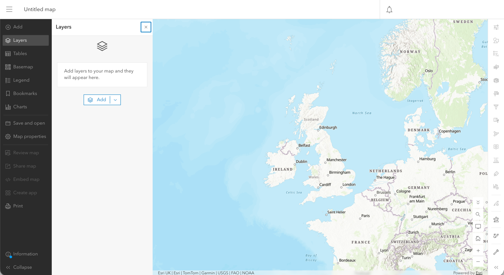
Figure 2: Map Viewer with an empty map.
2.3 Choose a basemap
Click Basemap and try a few of the options. A quiet basemap such as Light Gray Canvas or OpenStreetMap Style makes your own data stand out, whereas Imagery shows what the places look like from above. You can change the basemap again at any time.
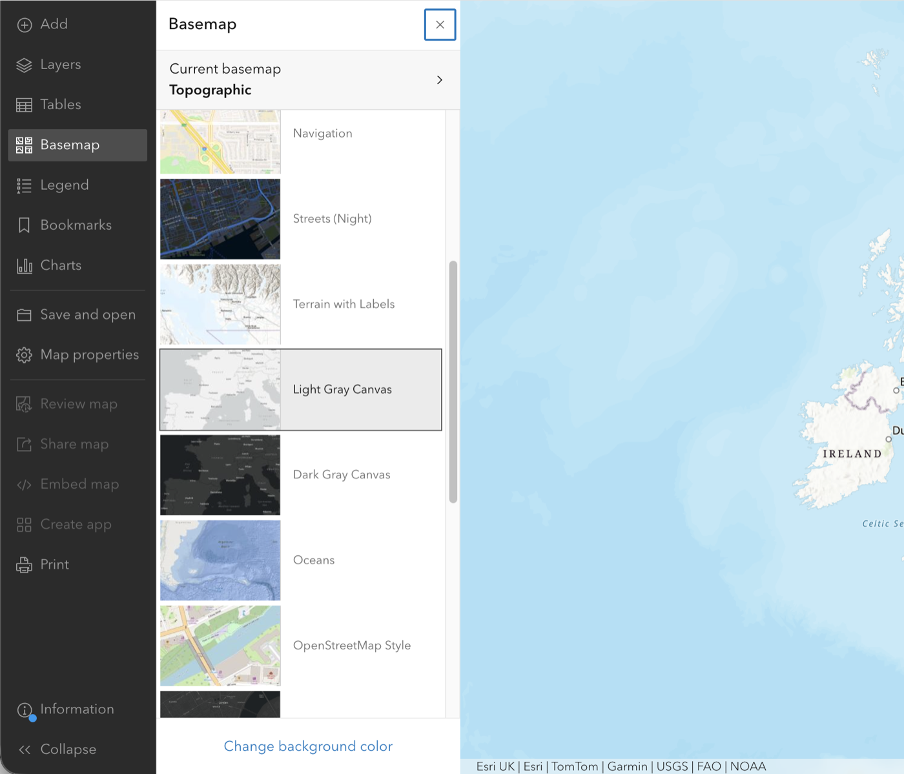
2.4 Add your working group’s sites
All field survey entries, from every group, are stored in a single layer. We will add that layer to our map and then filter it so that only your own working group’s sites are shown:
Click Add → Browse layers.
At the top of the panel, switch from My content to My organization, and search for
UCL Geography Field Survey_results. Make sure you pick the layer whose name ends in_results: there are other items with a very similar name, which will not work.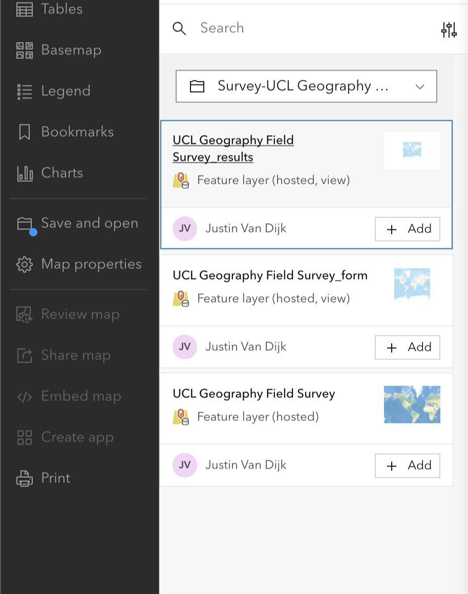
Figure 5: The survey layers in Browse layers, with My organization selected. Click Add on the
_resultslayer, and close the browse panel. The layer now appears under Layers, with the entries of the whole year. The map may not zoom to the points by itself; we will zoom in once we have filtered the layer.In Layers (left-hand toolbar), click the survey layer so that it is highlighted. Then click Filter on the right-hand toolbar (the funnel icon).
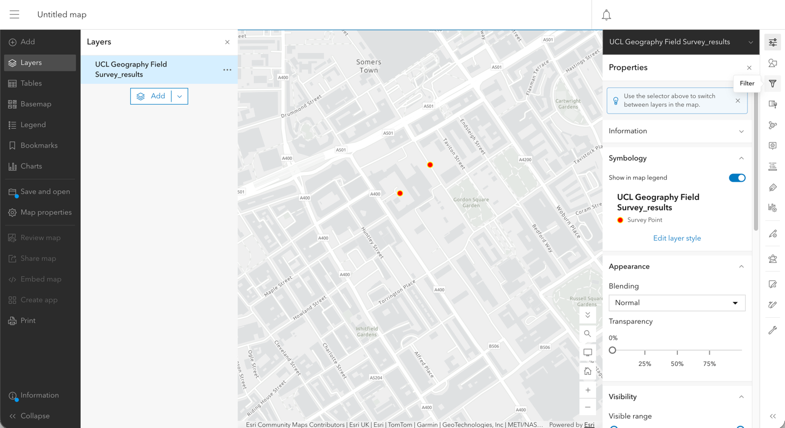
Figure 6: The survey layer added to the map, with Filter on the right-hand toolbar. Click Add new, and set up the following conditions:
- Data Collection is your fieldwork group:
Fieldwork - Catalonia Group 1if you were in Catalonia from 23 to 27 January;Fieldwork - Catalonia Group 2if you were in Catalonia from 27 to 31 January;Fieldwork - Londonif you did your fieldwork in London.
- Click Add new again, choose Working Group Number, change the operator from is at least to is, and enter your working group number (e.g.
5). Do not leave it on is at least: that keeps every working group with a higher number too. - Click Save. Only your working group’s sites should now be visible.
WarningThe screenshots show test data, not yoursThe screenshots on this page were made with the test entries (
Fieldwork - Test, working group0) and a test walk around the UCL campus. Do not copy these values: use your own fieldwork group and working group number in the filter, and your own group code in every title.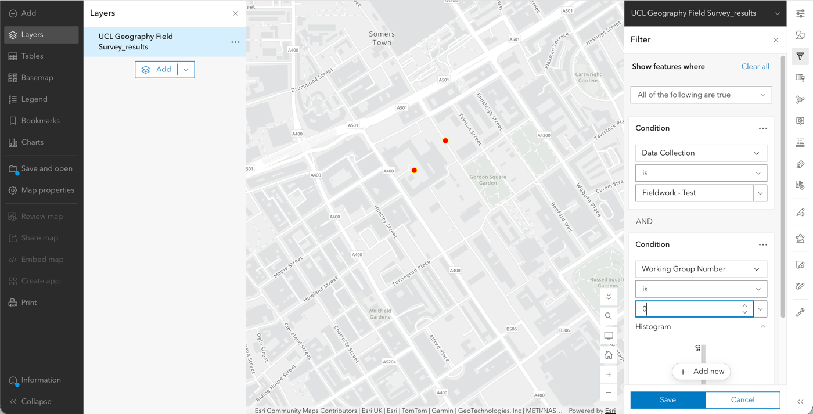
Figure 7: Filter set up for the test data: Data Collection is Fieldwork - Test, Working Group Number is0. Your filter uses your own fieldwork group and working group number.- Data Collection is your fieldwork group:
Zoom to your sites: in Layers, open the ⋯ menu of the layer → Zoom to layer.
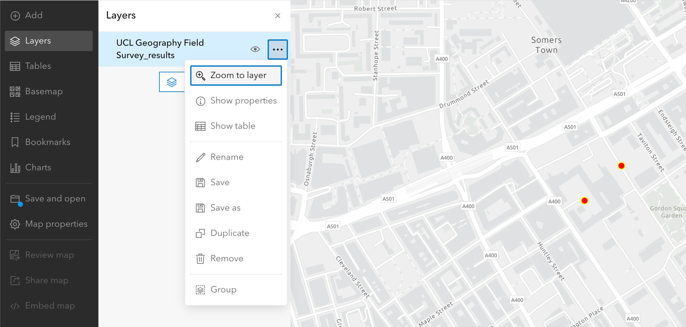
Figure 8: The layer menu with Zoom to layer. Click on a point. Its pop-up shows the attributes and photo your working group entered. We will tidy up this pop-up later on.
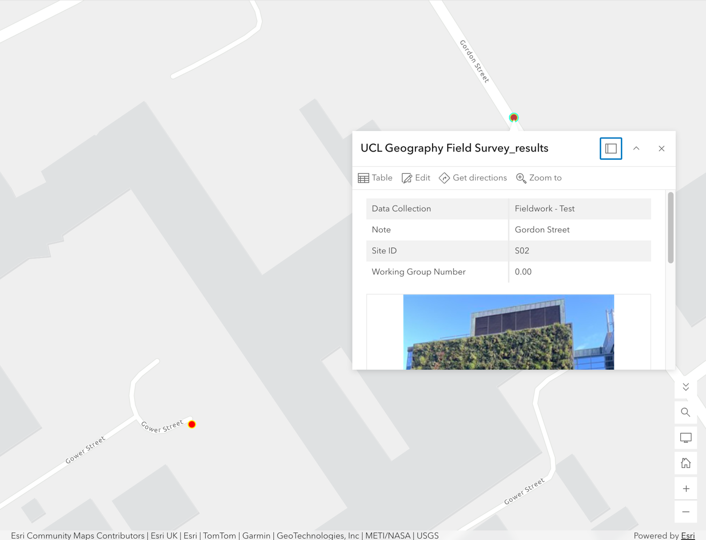
Figure 9: The default pop-up of a survey entry.
Note that the filter only changes your map: nobody else’s data are deleted or changed.
2.5 Add your route
Next, we will add your working group’s route from Strava. ArcGIS Online cannot read .gpx files, so we first convert the route to GeoJSON, a common format for spatial data that ArcGIS Online does accept.
2.5.1 Convert the route to GeoJSON
Go to geojson.io. There is no need to sign up.
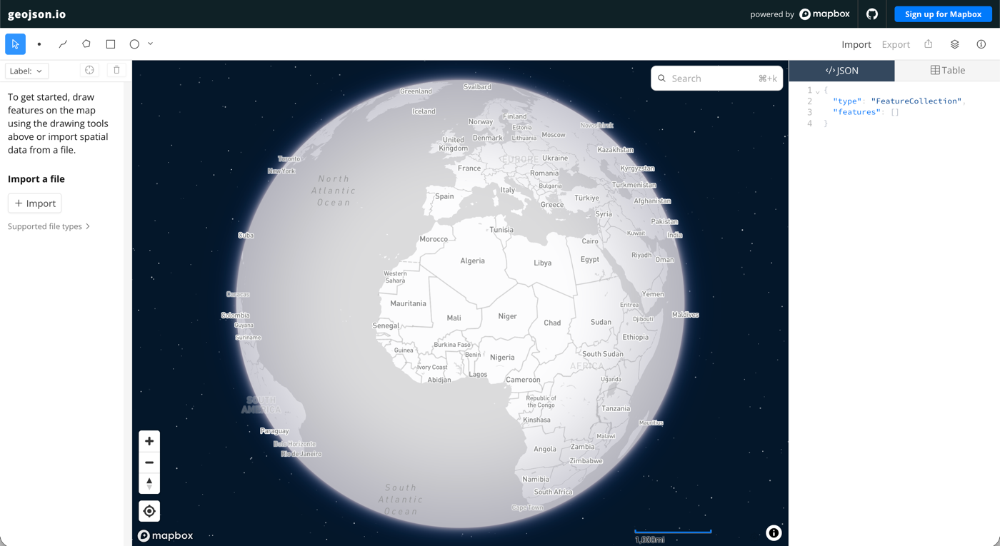
Figure 10: geojson.io, before importing a file. Click Import and select your
.gpxfile. Your route appears on the map as a line, and its data appear on the right.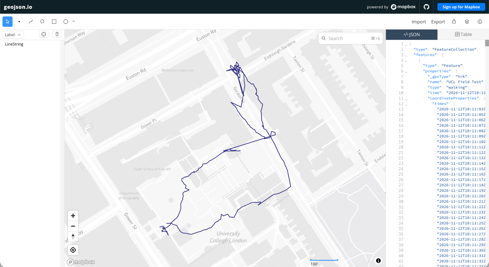
Figure 11: The route imported into geojson.io. Click Export, keep the file format on GeoJSON, and click Export. A
.geojsonfile is downloaded.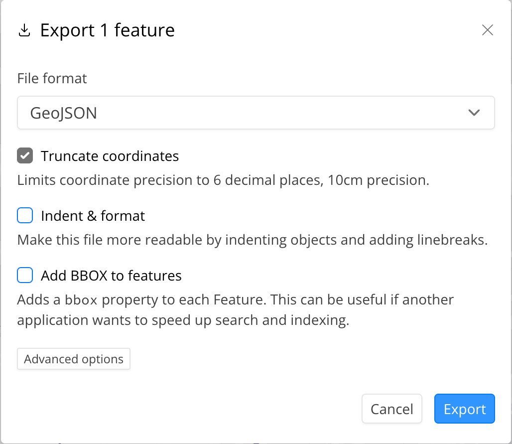
Figure 12: Exporting the route as GeoJSON.
2.5.2 Add the route to your map
Back in Map Viewer, click Add → Add layer from file, click Your device, and select the
.geojsonfile.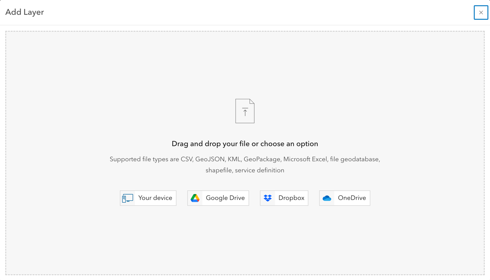
Figure 13: Adding a layer from a file. Choose Create a hosted feature layer and add it to the map, so that the route is stored in your own ArcGIS Online content, and click Next.
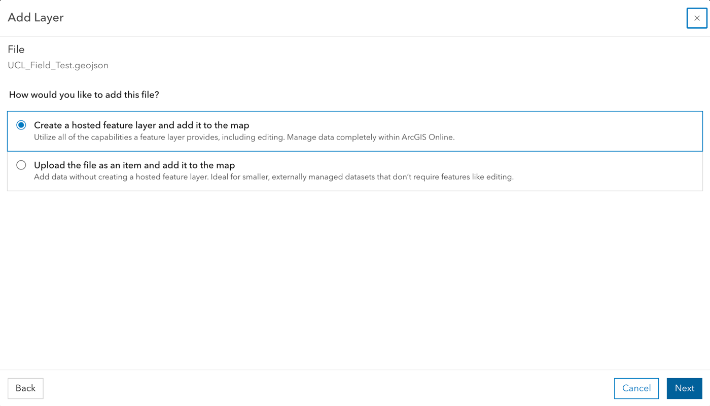
Figure 14: Creating a hosted feature layer. Give the layer a title that starts with your group code, such as
CAT1_WG05 route. The group code combines your fieldwork group and working group number:CAT1_WG05for Catalonia Group 1, working group 5 (CAT2_for Catalonia Group 2,LDN_for London). Then click Create and add to map.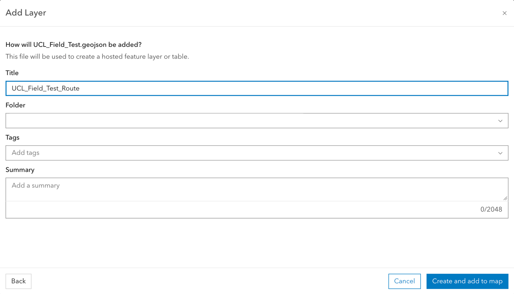
Figure 15: Title for the test walk route: UCL_Field_Test_Route. Your title starts with your own group code, such asCAT1_WG05 route.The route now appears as a line on the map. Check that it matches where you walked.
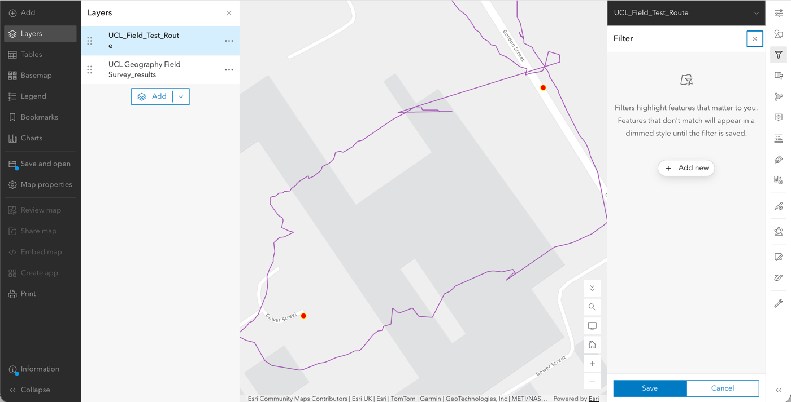
Figure 16: The route added to the map.
If your working group recorded more than one route, for instance one per outing, convert and add each .gpx file in the same way. You then have one route layer per recording.
Save your map now, via Save and open → Save as, with the title from Save your map. From then on, use Save and open → Save every now and then. If the session ends before you finish, your work so far is safe.
2.6 Style your layers
First, let us make the Layers list, and with it the legend, readable for someone else:
Give both layers a clear name, such as
Survey sitesandRoute: open the ⋯ menu of the layer in Layers → Rename, type the new name and click OK. This only changes the name in your map, not the original layer.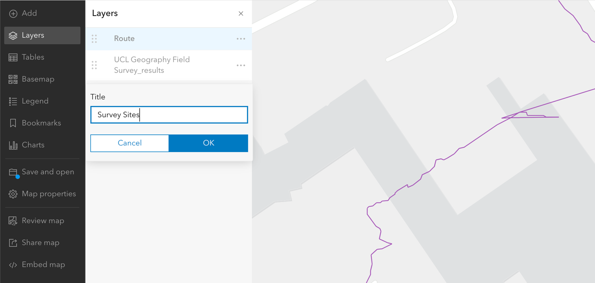
Figure 17: Renaming a layer. Check the order of the layers. The layer at the top of the list is drawn on top of the others. Because you added the route last, it is now on top, and may hide some of your sites. Drag the sites above the route by their handle (⠿).
To change how a layer looks, select it in Layers and click Styles on the right-hand toolbar. Keep the Location (single symbol) style, and click the pencil next to Symbol style. We will style both layers in turn:
- For the route, change the line colour and width so that the route is clearly visible on your basemap.
- For the sites, change the size and fill colour so that the points stand out against the route. You could also style them by an attribute instead, but a single clear symbol is fine for now.
Click Done when you are happy with a layer.
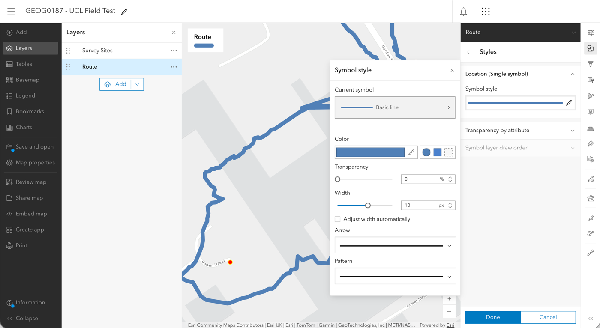
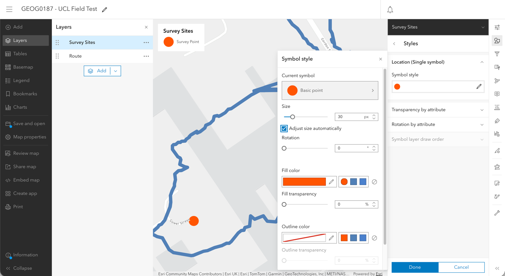
What we are aiming for is a map that someone who was not there can read at a glance: two clearly different layers, and nothing that distracts from them.
2.7 Set up the pop-ups
By default, a pop-up shows every attribute in the layer, which quickly becomes cluttered (Figure 9). Let us tidy it up: click the sites layer in Layers, and then Pop-ups on the right-hand toolbar:
Set the title to the site ID: click the { } button next to the title, and choose Site ID from the list of fields.
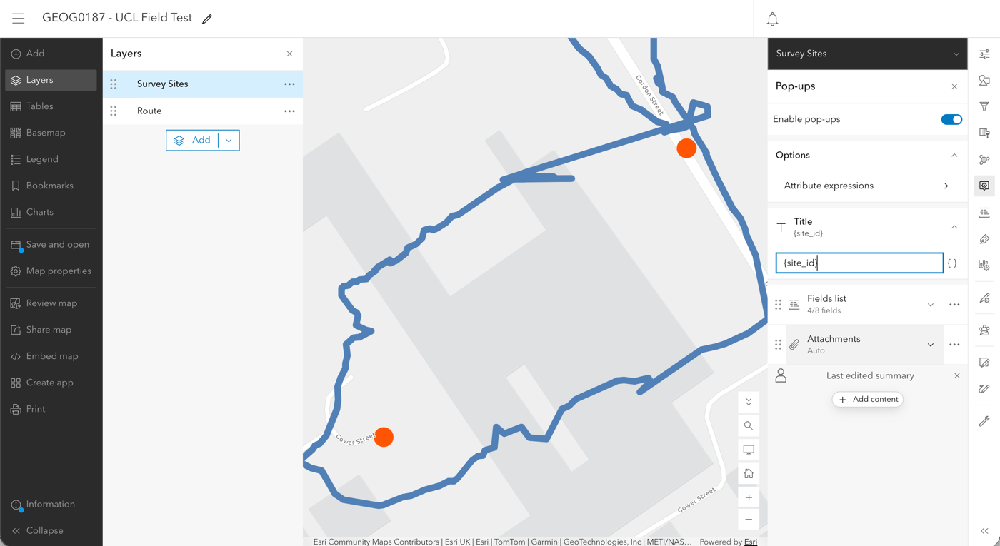
Figure 20: Setting the pop-up title. Open Fields list, click Select fields, and keep only Site ID and Note.
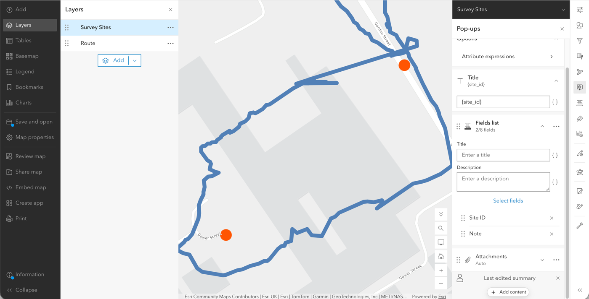
Figure 21: The fields list with Site ID and Note. Check that Attachments is included, so that the photo is shown.
Click on a few points on the map to check the result.
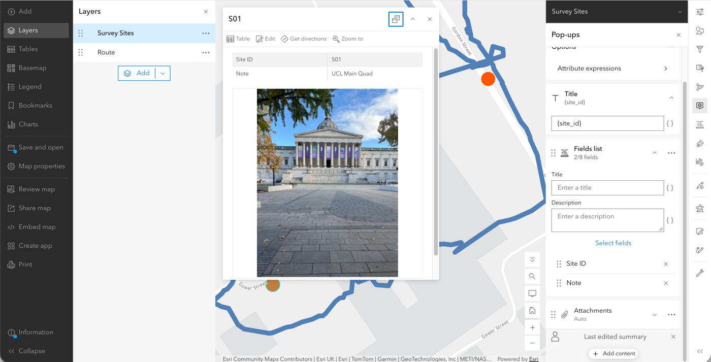
Figure 22: The tidied pop-up: site ID as the title, the note and the photo.
2.8 Save your map
Finally, we need to save the map so that you can open it again next week:
Click Save and open → Save as.
Use
GEOG0187 – CAT1_WG05as the title, with your own group code. Please do not add your name: the map ends up in your story map, which may become part of your portfolio, and the portfolio is marked anonymously. Add a short summary, for example Sites and route from fieldwork in Barcelona.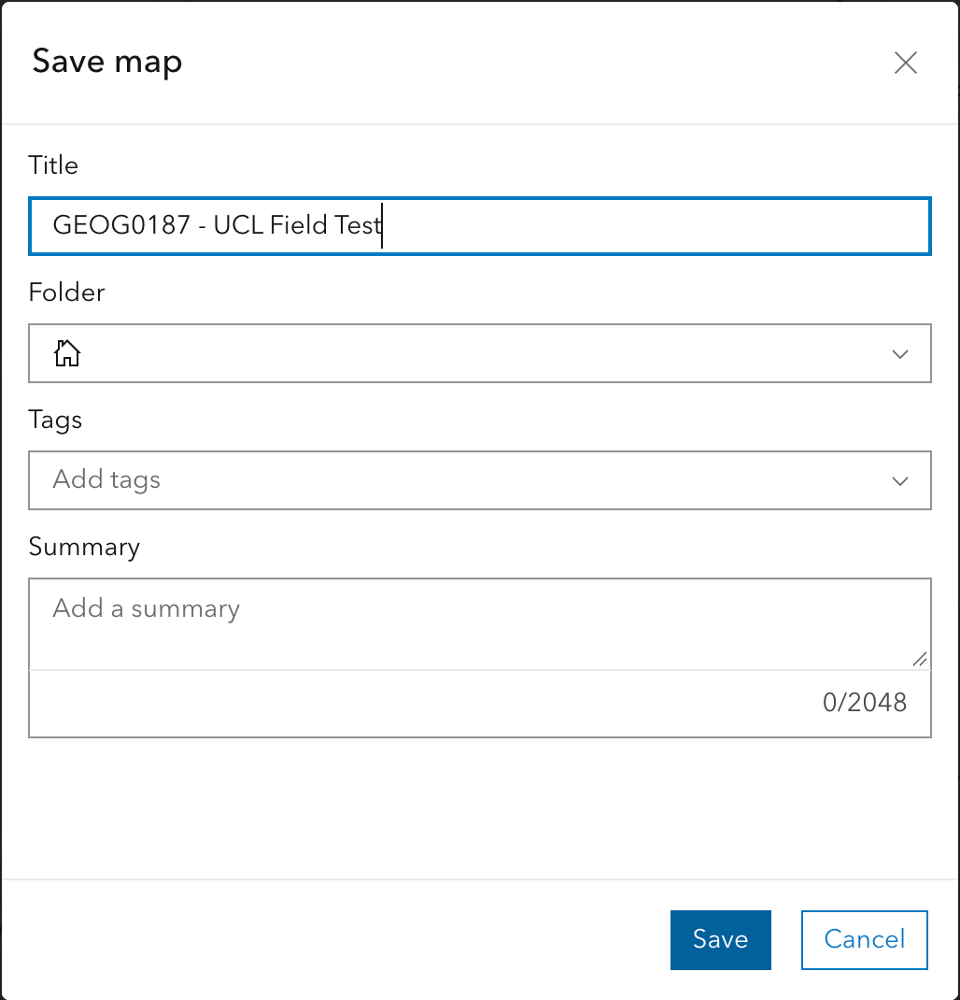
Figure 23: Saving the test walk map as GEOG0187 - UCL Field Test. Your title uses your own group code, such asGEOG0187 – CAT1_WG05.Click Save. The map will now be in Content → My content.
You do not need to share the map with anyone at this point.
2.9 Before you leave
By the end of this session, your saved map should have:
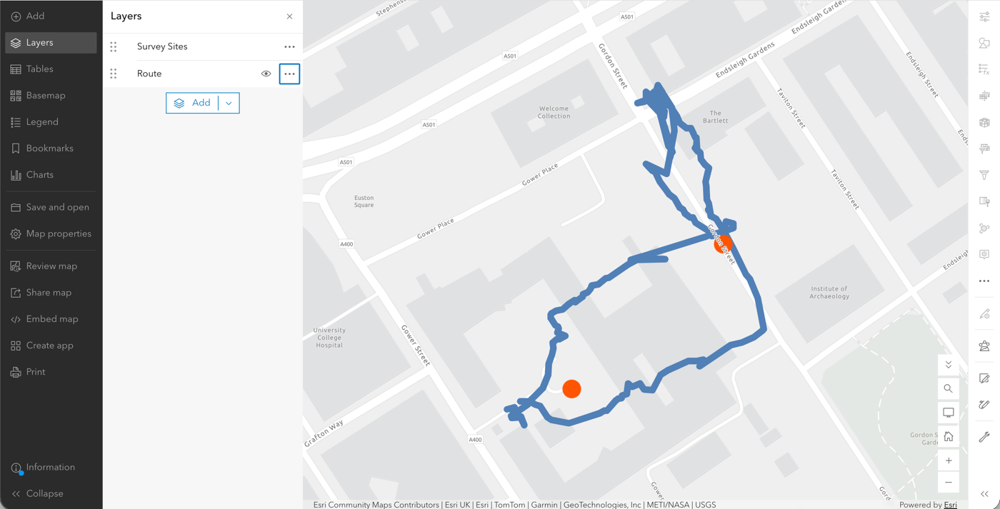
2.10 Troubleshooting
| Problem | What to try |
|---|---|
| The survey layer does not appear in the search | Check that you are searching My organization, not My content, and that you signed in through UCL SSO. |
| No sites are left after filtering | Check that your filter uses exactly the same fieldwork group and working group number as your working group’s survey link. If your sites are still missing, ask the teaching staff. |
| The filter shows other working groups too | Check that the Working Group Number condition uses is, not is at least. |
I do not have a .gpx file |
Ask whoever recorded the route in your working group to share it. In the meantime, you can practise with the test walk route used for the screenshots on this page (use the download button on the right). |
ArcGIS Online does not accept my .gpx file |
That is expected: convert it to GeoJSON first, using geojson.io (see Convert the route to GeoJSON). |
| geojson.io does not show a route | Check that the file ends in .gpx and was exported from the Strava website. You could also try a different browser. |
| The route is a straight line or has big jumps | The GPS signal was lost during recording. If two people in your working group recorded the route, use the other recording. |
| I cannot find the right-hand toolbar buttons | Click the « button at the bottom of the toolbar to show the names, or hover over an icon. |
| The photo does not show in the pop-up | Check that Attachments is switched on under Pop-ups. Note that not every entry has a photo. |
| I cannot find my map next time | Go to Content → My content, or search for GEOG0187. |